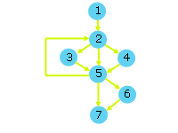

Module I - Design
Testing and Debugging Programs
Methodically test and debug C programs.
Testing |
Synatical Errors |
Semantic Errors |
Exercises
"Even professional programmers delude themselves.
In an experiment, 32 NASA programmers
applied 3 different testing techniques to a few
small programs. They were
asked to assess what proportion of bugs they
thought were found by each method. Their
intuitions turned out to be wrong. They
thought black-box testing based on specs was
the most effective, but in fact code reading
was more effective (even though the code
was uncommented). By reading code, they
found errors 50% faster!"
Victor R. Basili and Richard W. Selby.
Comparing the Effectiveness of Software Testing Strategies.
IEEE Transactions on Software Engineering. Vol. SE-13, No. 12, December 1987, pp.
1278-1296.
Testing
Black Box
External factors are determinant. Internal structure is irrelevant.
- testing to specifications
- input-output driven
- data driven
The number of possibilities to be tested
may be too great.
Equivalence Classes
Develop a manageable set of test cases.
Create equivalence classes with boundary values.
An equivalence class is a set where testwise any member is
as good as any other (for example, <1, 1...25, >25).
Experience suggests that faults frequently exist at and on
boundaries. Test either side of the boundaries
of the equivalence class as well as on the
boundary itself (for example, 0, 1, 2, 17, 24, 25, 26).
Repeat for output equivalence classes.
White Box
Internal structure is determinant.
- glass box
- logic-driven
- path-oriented
Each possible path through the code is executed at least
once. The number of paths may be too
great to test.
Flow Graphs
Develop a control flow graph that represents the
sequences, selections and iterations in the
program. Each flow graph node represents
one or more sequence statements. The edges
(or arrows) between the nodes represent flow of
control. Consider the following code
/* Testing - Flow Graph
* flowGraph.c
* Nov 26 2004
* BTP100
*/
#include<stdio.h>
int main(void) {
int total, value, count;
/* Start Node 1 */
total = 0;
count = 0;
/* End Node 1 */
do {
/* Start Node 2 */
scanf("%d", &value);
/* End Node 2 */
if (value < 0) {
/* Start Node 3 */
total -= value;
count++;
/* End Node 3 */
} else if (value > 0) {
/* Start Node 4 */
total += value;
count++;
/* End Node 4 */
}
/* Start Node 5 */
} while (value != 0);
/* End Node 5 */
if (count > 0)
/* Start Node 6 */
printf("The average value is %.2lf\n",
(double)total/count);
/* End Node 6 */
/* Start Node 7 */
return 0;
}
|
The flow graph for this code is:

Criteria
- statement coverage - every elementary statement is
executed at least once
- edge coverage - every edge is traversed at least once
- condition coverage - all possible values of the
constituents of each compound condition are exercised
at least once
- path coverage - all paths from initial node to
final node are traversed at least once.
Iterations
- skip the iteration entirely
- pass through the iteration once
- pass through the iteration less than the specified
number of times
- pass through the iteration the specified number of times
- pass through the iteration once more than the specified
number of times
Compound Conditions
- break into simple conditions
Syntactical Errors
- manual tracing
- using different compilers
- common errors
- missing semi-colon
- undeclared variable name
- unmatched parentheses
- left-side of assignment is not an l-value
- return statement missing
Semantic Errors
- vocalization
- manual tracing
- intermediate output
- interactive tracing
- dbx
- Visual Studio C++ 6.0
- Visual Studio .net
- common errors
- = instead of ==
- iteration has no body
- uninitialized variable
- infinite iteration
- operator precedence
- dangling else
- off-by-one iteration
- integer division
- mismatched data types
- & instead of &&
Exercises
- Trace the values of the variables d, i, j, k, x
in walkthrough compu_4.c using the
dbx debugger.
|